Shooting Tokyo
Tokyo is overwhelming in a way that sneaks up on you. It looks orderly from the outside — clean streets, quiet people, everything on time. Then you start walking and realise you have no idea what you're looking at.
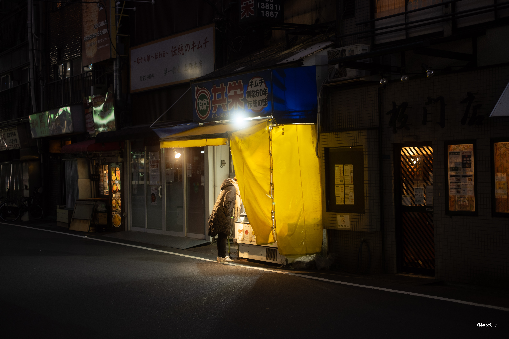
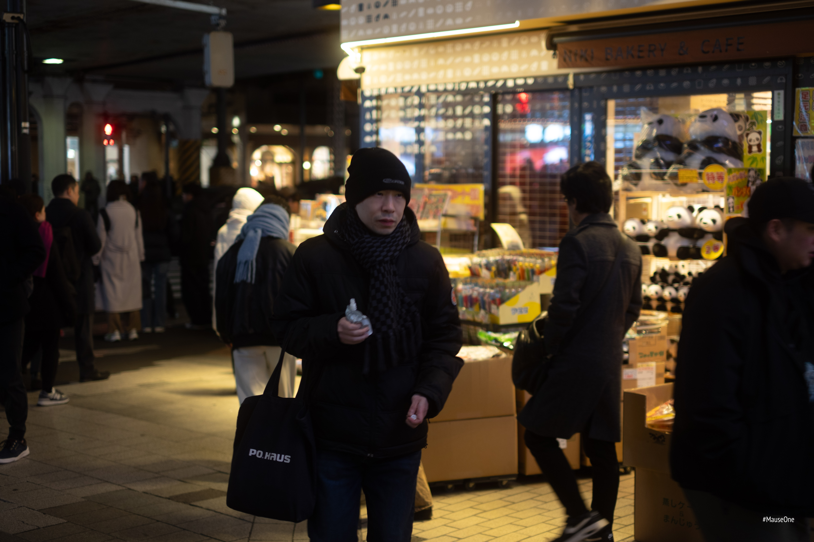
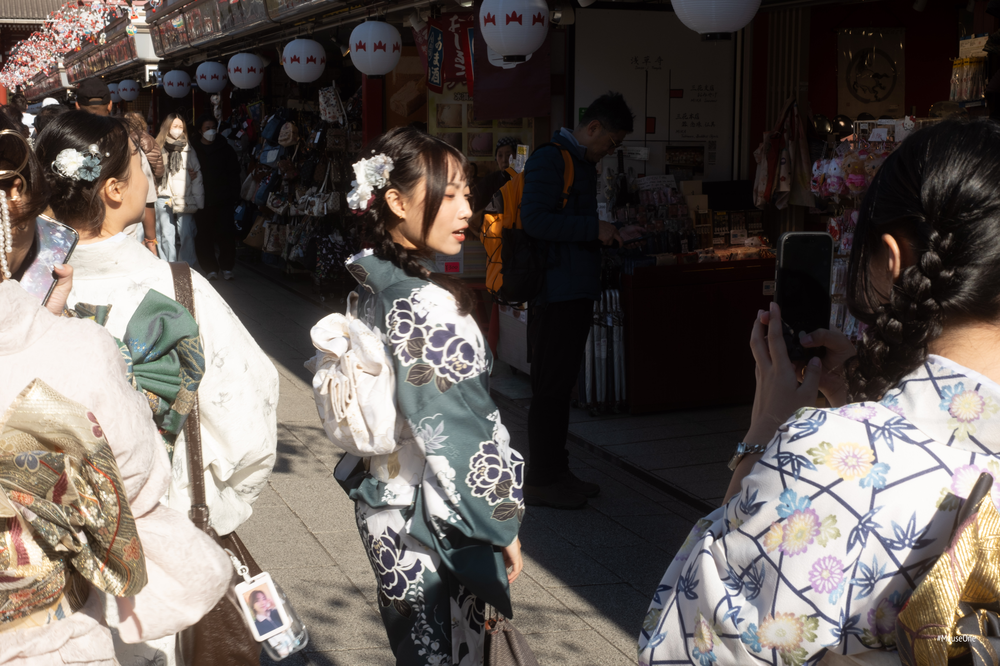
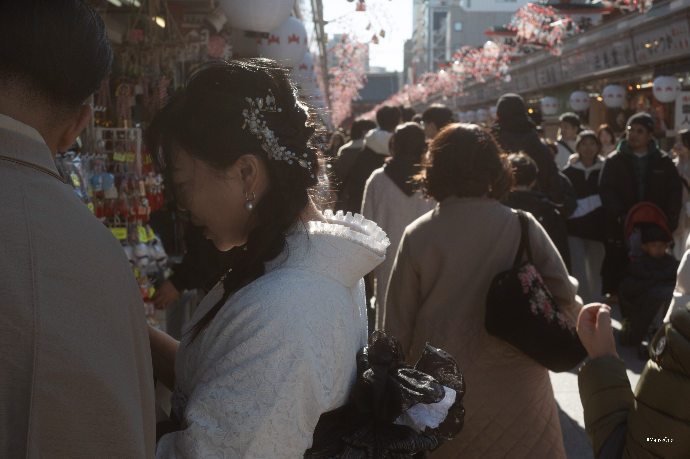
I stopped trying to find the obvious shots early on. The temples, the crossings, the neon. Everyone has those. I started looking for the gaps — the moments between the things everyone photographs.
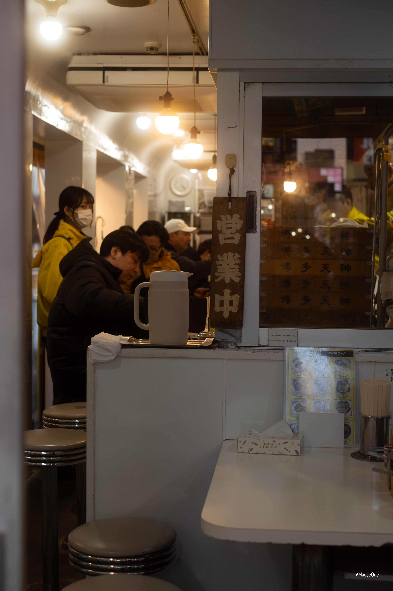
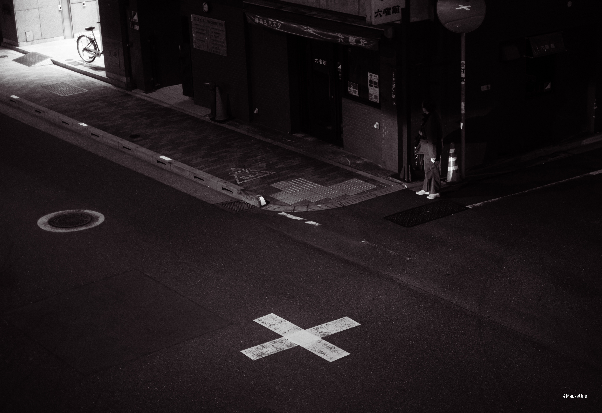

There's a particular stillness to Tokyo even when it's busy. People move with purpose and don't linger. You have a fraction of a second before the frame is gone. I missed a lot of them.
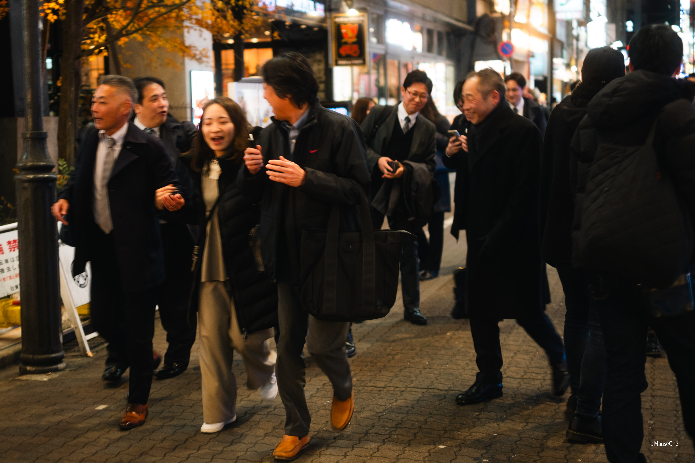
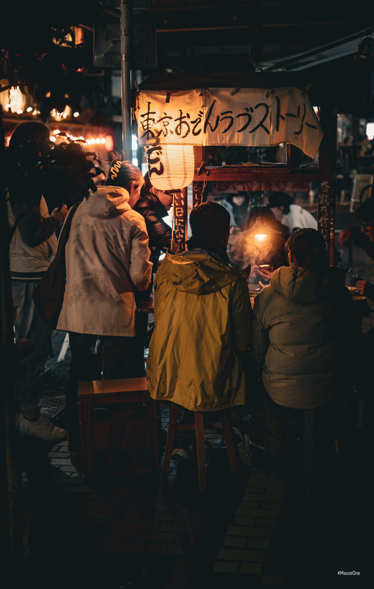
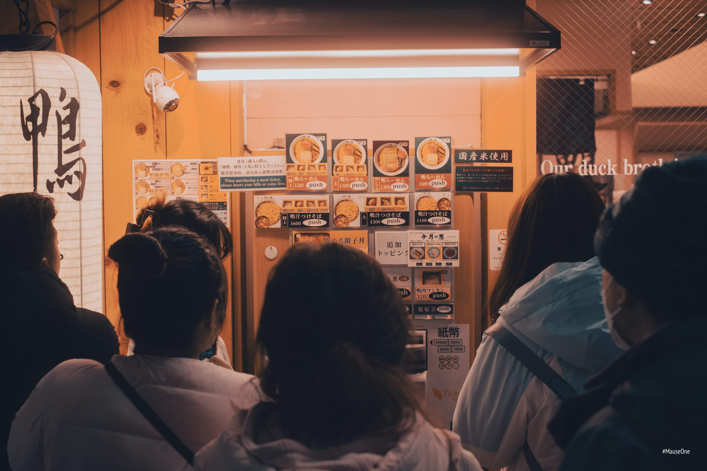
By the end I had folders full of images I wasn't sure about. That uncertainty felt different from other trips — less like failure, more like the city refusing to be summarised.
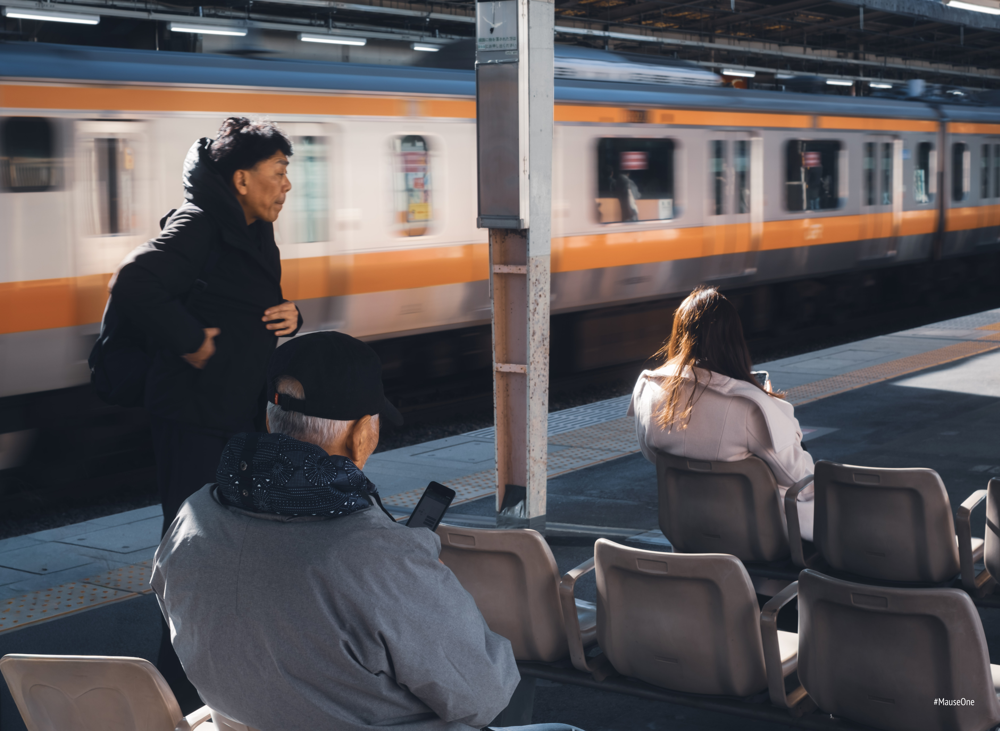
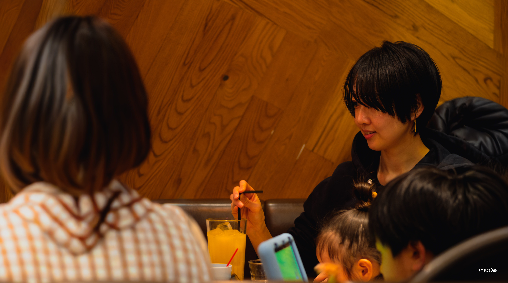

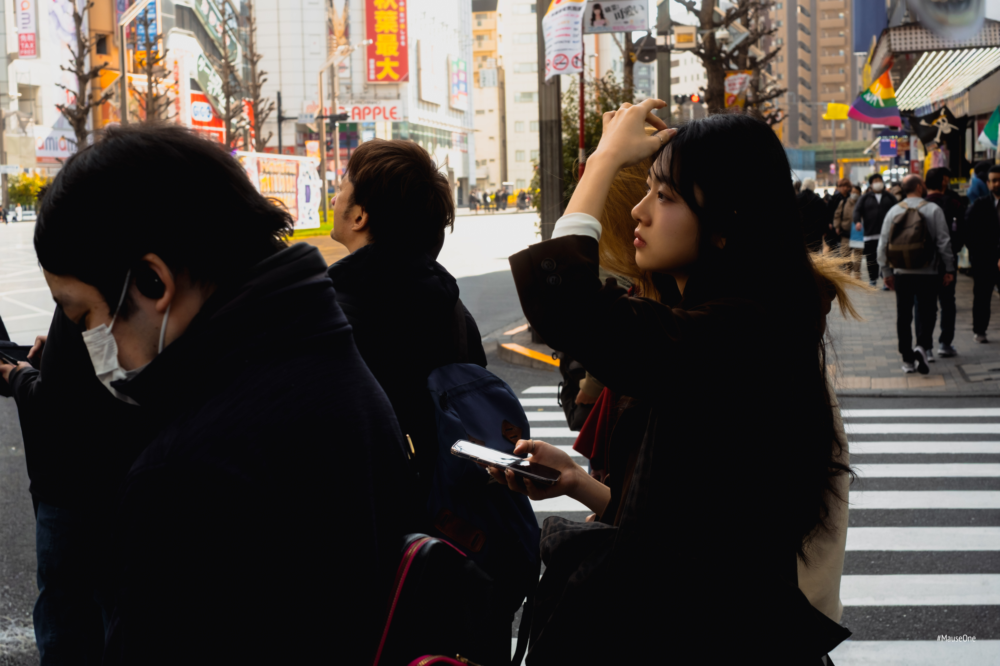
I left Tokyo thinking I'd need to come back to understand it. I'm not sure a second trip would change that. Some cities just stay unresolved.
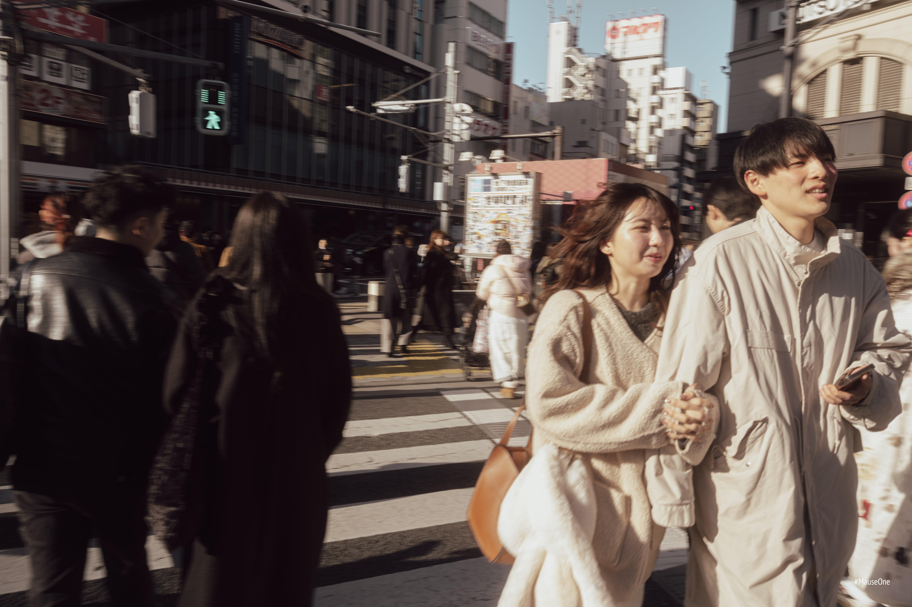
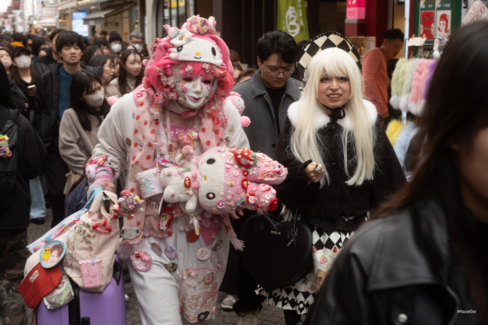